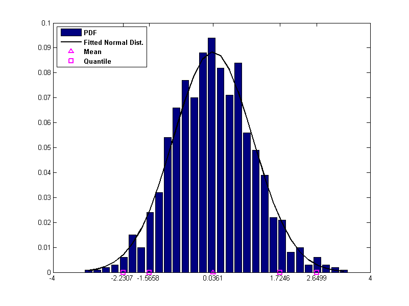

Contents
function quant=var_es(my_data,percentiles,k)
Document Title
The code will plot the discrete probability density function (pdf) against a fitted normal distribution and highlights the given percentiles
Author
Author : Haidar Haidar, Contact: http://haidora.blogspot.com Date: 2011
Inputs
% my_data : An array of values % The following inputs are optional % percentiles : The confidence level where the quantiles are computed. % k : The number of line space that is used in histogram for discretisation. % : k value is set to 50 by default and it affects the diagram
Example
% quant=var_es(randn(1000,1),[0.99,0.95,0.05,0.01],30) % quant=var_es(randn(1000,1))
OutPut
% quant: Quantile values % <PDF.fig>
Code
close all m=length(my_data); if nargin<3 k=50; end mu=mean(my_data); sigma=std(my_data); min_fwd=min(my_data); max_fwd=max(my_data); Bins=linspace(min_fwd,max_fwd,k); [freq,x_axis]=hist(my_data,Bins); pdf_1=freq./m; figure('position',[0 0 800 600]); xlabel('data'); ylabel('relative frequency'); Y=normpdf(x_axis,mu,sigma); bar(x_axis,pdf_1,'FaceColor',[0,0,128]/255); hold on plot(x_axis,Y./sum(Y),'Color',[0,0,0]/255,'LineWidth',2); hold on plot(mu,0,'^m','LineWidth',1.5); hold on if nargin>=2 m_conf=length(percentiles); quant=quantile(my_data,percentiles); X_axis=get(gca,'XTick'); set(gca,'XTick',unique([min(X_axis) mu quant max(X_axis)])); for i=1:m_conf plot(quant(i),0,'sm','LineWidth',2); hold on end legend({'PDF','Fitted Normal Dist.','Mean','Quantile'},'Location','NorthWest','FontSize',10,'FontWeight','Bold'); else quant=''; legend({'PDF','Fitted Normal Dist.','Mean'},'Location','NorthWest','FontSize',10,'FontWeight','Bold'); end return
quant =
2.6499 1.7246 -1.5658 -2.2307
